공조냉동기계산업기사 (2013-08-18 기출문제)
1과목: 공기조화
1. 복사 냉난방 방식에 대한 설명으로 틀린 것은?
- 비교적 쾌감도가 높다.
- 패널 표면온도가 실내 노점온도보다 높으면 결로하게 된다.
- 배관매설을 위한 시설비가 많이 들며 보수 및 수리가 어렵다.
- 방열기가 필요치 않아 바닥면의 이용도가 높다.
(정답률: 81%)

2. 실내에 존재하는 습공기의 전열량에 대한 현열량의 비율을 나타낸 것은?
- 현열비(SHF)
- 잠열비
- 바이패스비(BF)
- 열수분비(U)
(정답률: 91%)
3. 대기의 절대습도가 일정할 때 하루 동안의 상대습도 변화를 설명한 것 중 올바른 것은?
- 절대습도가 일정하므로 상대습도의 변화는 없다.
- 낮에는 상대습도가 높아지고 밤에는 상대습도가 낮아진다.
- 낮에는 상대습도가 낮아지고 밤에는 상대습도가 높아진다.
- 낮에는 상대습도가 정해지면 하루종일 그 상태로 일정하게 된다.
(정답률: 82%)
4. 냉각수는 배관내를 통하게 하고 배관 외부에 물을 살수하여 살수된 물의 증발에 의해 배관 내 냉각수를 냉각시키는 방식으로 대기오염이 심한 곳 등에서 많이 적용되는 냉각탑 방식은?
- 밀폐식 냉각탑
- 대기식 냉각탑
- 자연통풍식 냉각탑
- 강제통풍식 냉각탑
(정답률: 86%)
5. 유인 유닛(IDU)방식에 대한 설명 중 틀린 것은?
- 각 유닛마다 제어가 가능하므로 개별실 제어가 가능하다.
- 송풍량이 많아서 외기 냉방효과가 크다.
- 냉각, 가열을 동시에 하는 경우 혼합손실이 발생한다.
- 유인 유닛에는 통릭배선이 필요 없다.
(정답률: 75%)
6. 덕트계 부속품의 기능을 설명한 것으로 옳지 않은 것은?
- 댐퍼 : 풍량을 조정하거나 덕트를 폐쇄하기 위해 설치된다.
- 플렉시블 커플링 : 송풍기와 덕트를 접속할 때 사용하며 진동이 전달되는 것을 방지한다.
- 취출구 : 덕트로부터 공기를 실내로 공급한다.
- 후드 : 실내로 광범위하게 공기를 공급한다.
(정답률: 80%)
7. 공기 중의 냄새나 아황산가스 등 유해 가스의 제거에 가장 적당한 필터는?
- 활성탄 필터
- HEPA 필터
- 전기 집진기
- 롤 필터
(정답률: 83%)
8. 다수의 전열판을 겹쳐 놓고 볼트로 연결시킨 것으로 판과 판 사이를 유체가 지그재그로 흐르면서 열교환이 이루어지는 것으로 열교환 능력이 매우 높아 설치면적이 적게 필요하고 전열판의 공감으로 기기 용량의 변동이 용이한 열교환기를 무엇이라 하는가?
- 플레이트형 열교환기
- 스파이럴 열교환기
- 원통다관형 열교환기
- 회전형 전열교환기
(정답률: 85%)
9. 아래 그림과 같은 병행류형 냉각코일의 대수평균 온도차는 약 얼마인가?
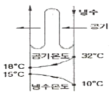
- 8.74℃
- 9.54℃
- 12.33℃
- 13.10℃
(정답률: 69%)
10. 기류 및 주위벽면에서의 복사열은 무시하고 온도와 습도만으로 쾌적도를 나타내는 지표를 무엇이라고 부르는가?
- 쾌적 건강지표
- 불쾌지수
- 유효온도지수
- 청정지표
(정답률: 89%)
11. 온수난방 장치와 관계없는 것은?
- 팽창탱크
- 보일러
- 버킷트랩
- 공기배기 밸브
(정답률: 65%)
12. 상당방열면적(EDR)에 대한 설명으로 맞는 것은?
- 표준상태의 방열기의 전 방열량을 연료 연소에 따른 방열면적으로 나눈 값
- 표준상태의 방열기의 전 방열량을 보일러 수관의 방열면적으로 나눈 값
- 표준상태의 방열기의 전 방열량을 표준 방열량으로 나눈 값
- 표준상태의 방열기의 전 방열량을 실내 벽체에서 방열되는 면적으로 나눈 값
(정답률: 79%)
13. 냉방부하의 종류 중 현열만 존재하는 것은?
- 외기를 실내 온ㆍ습도로 냉각, 감습 시키는 열량
- 유리를 통과하는 전도열
- 문틈에서의 틈새바람
- 인체에서의 발생열
(정답률: 83%)
14. 배관 계통에서 유량은 다르더라도 단위길이당 마찰 손실이 일정하게 되도록 관경을 정하는 방법은?
- 균등법
- 균압법
- 등마찰법
- 등속법
(정답률: 85%)
15. 기기 1대로 동시에 냉ㆍ난방을 해결할 수 있는 장치로 도시가스를 직접 연소시켜 사용할 수 있고 압측기를 사용하지 않는 열원방식은?
- 흡수식 냉온수기 방식
- GHP 설비방식
- 빙측열 설비방식
- 전동냉동기+보일러 방식
(정답률: 80%)
16. 공조용으로 사용되는 냉동기의 공류가 아닌 것은?
- 원심식 냉동기
- 자흡식 냉동기
- 왕복동식 냉동기
- 흡수식 냉동기
(정답률: 86%)
17. 외기온도 -5℃, 실내온도 20℃, 벽면적 20m2인 실내의 열손실량은 얼마인가? (단, 벽체의 열관듀율 8kcal/m2h℃, 벽체두께 20cm, 방위계수는 1.2이다.)
- 4800kcal/h
- 4000kcal/h
- 3200kcal/h
- 2400kcal/h
(정답률: 55%)
18. 실내 취득 냉방부하가 아닌 것은?
- 재열부하
- 벽체의 측열부하
- 극간등에 의한 부하
- 유리창의 복사열에 의한 부하
(정답률: 79%)
19. 송풍기의 특성을 나타내는 요소에 해당되지 않는 것은?
- 압력
- 측동력
- 재질
- 풍량
(정답률: 86%)
20. 공기량(풍량) 400kg/h, 절대습도 x1=0.007kg/kg1인 공기를 x2=0.013kg/kg1까지 가습하는 경우 가습에 필요한 공급수량은 얼마인가?
- 2.0kg/h
- 2.4kg/h
- 3.0kg/h
- 3.5kg/h
(정답률: 67%)
2과목: 냉동공학
21. 감압장치에 관한 내용 중 틀린 것은?
- 감압장치에는 교축밸브를 사용하는데 냉동기에서는 이것을 보통 팽창밸브라고 한다.
- 플로트 밸브식 팽창밸브를 일명 정압식 팽창밸브라고 한다.
- 자동식 팽창밸브는 증발기내의 압력을 항상 일정하게 유지해 준다.
- 온도조절식 팽창밸브는 주로 직접팽창식 증발기에 쓰이는데, 종류는 내부 균압관형과 외부 균압관형이 있다.
(정답률: 56%)
22. 고온가스에 의한 제상 시 고온가스의 흐름을 제어하는 것으로 적당한 것은?
- 모세관
- 자동팽창밸브
- 전자밸브
- 사방밸브(4-way밸브)
(정답률: 76%)
23. 할로겐 탄화수소계 냉매의 누설을 탐지하는 방법으로 가장 적합한 것은?
- 유황을 묻힌 심지를 이용한다.
- 헬라이드 토오치를 이용한다.
- 네슬러 시약을 이용한다.
- 페놀프탈렌 시험지를 이용한다.
(정답률: 83%)
24. 왕복통 압측기에서 -30 ~ -70℃정도의 저온을 얻기 위해서는 2단 압측 방식을 채용한다. 그 이유 중 옳지 않은 것은?
- 토출가스의 온도를 높이기 위하여
- 윤활유의 온도 상승을 피하기 위하여
- 압측기의 효율 저하를 막기 위하여
- 성적계수를 높이기 위하여
(정답률: 80%)
25. 냉동장치의 저압차단 스위치(LPS)에 관한 설명으로 맞는 것은?
- 유압이 저하했을 때 압측기를 정지시킨다.
- 토출압력이 저하했을 때 압측기를 정지시킨다.
- 장치내 압력이 일정압력 이상이 되면 압력을 저하시켜 장치를 보호한다.
- 흡입압력이 저하했을 때 압측기를 정지 시킨다.
(정답률: 66%)
26. 증발압력 조정밸브(EPR)에 대한 설명 중 틀린 것은?
- 냉수 브라인 냉각 시 동결 반지용으로 설치한다.
- 증발기내의 압력을 일정압력 이하가 되지 않게 한다.
- 증발기 출구 밸브입구 측의 압력에 의해 작동한다.
- 한 대의 압측기로 증발온도가 다른 2대 이상의 증발기 사용 시 저온측 증발기에 설치한다.
(정답률: 65%)
27. 내부에너지에 대한 설명 중 잘못된 것은?
- 계(係)의 총에너지에서 기계적 에너지를 뺀 나머지를 내부에너지라 한다.
- 내부에너지 변화가 없다면 가열량은 일로 변환된다.
- 온도의 변화가 없으면 내부에너지의 변화도 없다.
- 내부에너지는 물체가 갖고 있는 열에너지이다.
(정답률: 69%)
28. 유량 100L/min 물을 15℃에서 10℃로 냉각하는 수냉각기가 있다. 이 냉동장치의 냉동효과가 125kJ/kg일 경우에 냉매 순환량은 얼마인가? (단, 물의 비열은 4.18kJ/kgㆍk이다.)
- 16.7kg/h
- 1000kg/h
- 450kg/h
- 960kg/h
(정답률: 49%)
29. 30℃의 원수 5ton을 3시간에 2℃까지 냉각하는 수 냉각장치의 냉동 능력은 약 얼마인가?
- 8 RT
- 11 RT
- 14 RT
- 26 RT
(정답률: 64%)
30. 물 5kg을 0℃에서 80℃까지 가열하면 물의 엔트로피 증가는 약 얼마인가? (단, 물의 비열은 4.18kJ/kgㆍk이다.)
- 1.17kJ/K
- 5.37kJ/K
- 13.75kJ/K
- 26.31kJ/K
(정답률: 47%)
31. 흡수식 냉동기에서 냉매와 흡수용액을 분리하는 기기는?
- 발생기
- 흡수기
- 증발기
- 응측기
(정답률: 64%)
32. 흡수식 냉동기에서 재생기에서의 열량을 QG 응측기에서의 열량을 QC 증발기에서의 열량을 QE 흡수기에서의 열량을 QA 라고 할 때 전체의 열평형식으로 옳은 것은?(오류 신고가 접수된 문제입니다. 반드시 정답과 해설을 확인하시기 바랍니다.)
- QG=QE+QC+QA
- QG+QC=QE+QA
- QG+QA=QC+QE
- QG+QE=QC+QA
(정답률: 56%)
33. 어떤 변화가 가역인지 비가역인지 알려면 열역학 몇 법칙을 적용하면 되는가?
- 제 0 법칙
- 제 1 법칙
- 제 2 법칙
- 제 3 법칙
(정답률: 83%)
34. 부압적용에 의하여 진공을 만들어 냉동작용을 하는 것은?
- 증기분사 냉동기
- 왕복동 냉동기
- 스크류 냉동기
- 공기압축 냉동기
(정답률: 63%)
35. 다음 냉동 관련 용어의 설명 중 잘못된 것은?
- 제빙톤 : 25℃의 원수 1톤을 24시간 동안에 -9℃의 얼음으로 만드는데 제거할 열량을 냉동능력으로 표시한다.
- 동결점 : 물질내에 존재하는 수분이 얻기 시작하는 온도를 말한다.
- 냉동톤 : 0℃의 물 1톤을 24시간 동안에 -10℃의 얼음으로 만드는데 필요한 냉동능력으로 1RT=2520kcal/h이다.
- 결빙시간 : 얼음을 얼리는데 소요되는 시간은 얼음 두게의 제곱에 비례하고, 브라인의 온도에는 반비례한다.
(정답률: 82%)
36. 냉매가스를 단열 압측하면 온도가 상승한다. 다음 가스를 같은 조건에서 단열 압측할 때 온도 상승률이 가장 큰 것은?
- 공기
- R-12
- R-22
- NH2
(정답률: 70%)
37. 액 흡입으로 인해 발생하는 압축기 소손을 방지하기 위한 부속장치는?
- 저압차단 스위치
- 고압차단 스위치
- 어큐믈레이터
- 유압보호스위치
(정답률: 75%)
38. 역카르노 사이클로 작동되는 냉동기에서 성능계수(COP)가 가장 큰 응축온도(tc) 및 증발온도(te)는?
- tc = 20℃, te = -10℃
- tc = 30℃, te = 0℃
- tc = 30℃, te = -10℃
- tc = 20℃, te = -20℃
(정답률: 62%)
39. 냉동장치에서 일반적으로 가스퍼저(Gas Purger)를 설치할 경우 설치위치로 적당한 곳은?
- 수액기와 팽창밸브의 액관
- 응측기와 수액기의 액관
- 응측기와 수액기의 균압관
- 응측기 직전의 토출관
(정답률: 64%)
40. 냉동식품의 생산공장에 많이 설치되는 동결장치로 설치 면적이 작고 출입구의 레이아웃을 비교적 자유롭게 하여 생산공정의 연속화, 라인화에 쉽게 연결 할 수 있는 방식은?
- 스파이럴식 동결장치
- 송풍 동결장치
- 공기 동결장치
- 액체질소 동결장치
(정답률: 74%)
3과목: 배관일반
41. 배관된 관의 수리 교체에 편리한 이용방법은?
- 용접이음
- 신측이음
- 플랜지이음
- 스위블이음
(정답률: 84%)
42. 급탕배관에 관한 설명 중 틀린 것은?
- 건물의 벽 관동부분 배관에는 슬리브(sleeve)를 끼운다.
- 공기빼기 밸브를 설치한다.
- 배관기울기는 중력순환식인 경우 보통 1/150으로 한다.
- 직선 배관 시에는 강관인 경우 보통 60m마다 1개의 신측이음쇠를 설치한다.
(정답률: 81%)
43. 배관의 지름은 유속에 따라 결정되어진다. 저압 증기관에서의 권장유속으로 적당한 것은?
- 10 ~ 15 m/s
- 20 ~ 30 m/s
- 35 ~ 45 m/s
- 50 m/s이상
(정답률: 52%)
44. 증기난방에 고압식인 경우 증기 압력은?
- 0.15 ~ 0.35kgf/cm2미만
- 0.35 ~ 0.72kgf/cm2미만
- 0.72 ~ 1kgf/cm2미만
- 1kgf/cm2이상
(정답률: 84%)
45. 아래 그림과 같이 호칭직경 20A인 강관을 2개의 45°엘보를 사용하여 그림과 같이 연결하였다면 강관의 실제 소요길이는 얼마인가? (단, 엘보에 삽입되는 나사부의 길이는 10mm이고, 엘보의 중심에서 끝 단면까지의 길이는 25mm이다.)
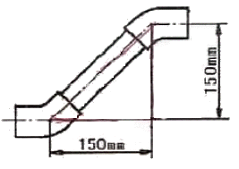
- 212.1mm
- 200.3mm
- 170.3mm
- 182.1mm
(정답률: 58%)
46. 주철판의 소켓이음 시 코킹작업을 하는 주목적으로 가장 적합한 것은?
- 누수방지
- 경도증가
- 인장강도증가
- 내진성증가
(정답률: 86%)
47. 증기난방에 비해 온수난방의 특징으로 틀린 것은?
- 예열시간이 길지만 가열후에 냉각시간도 길다.
- 공기 중의 미진이 늘어 생기는 나쁜 냄새가 적어 실내의 쾌적도가 높다.
- 보일러의 취급이 비교적 쉽고 비교적 안전하여 주택 등에 적합하다.
- 난방부하 변동에 따른 온도조절이 어렵다.
(정답률: 82%)
48. 배수관 설치기준에 대한 내용 중 틀린 것은?
- 배수관의 최소 관경은 20mm 이상으로 한다.
- 지중에 매설하는 배수관의 관경은 50mm이상이 좋다.
- 배수관은 배수의 유하방향(流下方向)으로 관경을 축소해서는 안된다.
- 기구배수관의 관경은 이것에 접속하는 위생기구의 트랩구경 이상으로 한다.
(정답률: 67%)
49. 열을 잘 반사하고 내열성이 있어 난방용 방열기 등의 외면에 도장하는 도료로 맞는 것은?
- 산화철도료
- 광명단도료
- 알루미늄도로
- 합성수지도료
(정답률: 75%)
50. 배수 트랩 중 관 트랩의 종류가 아닌 것은?
- P트랩
- V트랩
- S트랩
- U트랩
(정답률: 80%)
51. 2원 냉동장치의 구성기기 중 수액기의 설치 위치는?
- 증발기와 압축기 사이
- 압축기와 응축기 사이
- 응축기와 팽창 밸브 사이
- 팽창 밸브와 증발기 사이
(정답률: 54%)
52. 체크밸브에 대한 설명으로 옳은 것은?
- 스윙형, 리프트형, 풋형 등이 있다.
- 리프트형은 배관의 수직부에 한하여 사용한다.
- 스윙형은 수평배관에만 사용한다.
- 유량조절용으로 적합하다.
(정답률: 80%)
53. 급탕설비에 있어서 팽창관의 역할을 설명한 것으로 적당하지 않은 것은?
- 보일러 내면에 생기기 쉬운 스케일 부착을 방지한다.
- 물의 온도 상승에 따른 용적 팽창을 흡수한다.
- 배관내의 공기나 증기의 배출을 돕는다.
- 안전밸브의 역할을 한다.
(정답률: 63%)
54. 급수배관에서의 수격작용 발생개소와 거리가 먼 것은?
- 관내 유속이 빠른 곳
- 구배가 완만한 곳
- 급격히 개폐되는 밸브
- 굴곡개소가 있는 곳
(정답률: 84%)
55. 다음 그림 기호가 나타내는 밸브는?
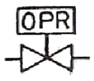
- 증발압력 조정밸브
- 용량 조정밸브
- 유압 조정밸브
- 흡입압력 조정밸브
(정답률: 81%)
56. 스테인리스강관에 대한 설명으로 적당하지 않은 것은?
- 위생적이어서 적수의 염려가 적다.
- 내식성이 우수하다.
- 몰코 이음법 등 특수 시공법으로 대체로 배관 시공이 간단하다.
- 저온에서 내충격성이 적다.
(정답률: 77%)
57. 온수난방용 개방식 팽창탱크에 대한 설명 중 맞지 않는 것은?
- 탱크용량은 전체 팽창량과 같은 체적이어야 한다.
- 저 온수난방에 흔히 사용된다.
- 배관계동상 최고 수위보다 1m이상 높게 설치한다.
- 탱크의 상부에 통기관을 설치한다.
(정답률: 55%)
58. 급수펌프의 설치 시 주의사항으로 틀린 것은?
- 펌프는 기초볼트를 사용하여 기초 콘크리트 위에 설치 고정한다.
- 풋 밸브는 동수위면 보다 흡입관경의 2배 이상 물속에 들어가게 한다.
- 토축측 수평판은 상향구배로 배관한다.
- 흡입양정은 되도록 길게 한다.
(정답률: 79%)
59. 배관지지 장치에서 수직방향 변위가 없는 곳에 사용되는 행거는 어느 것인가?
- 리지드 행거
- 콘스턴트 행거
- 가이드 행거
- 스프링 행거
(정답률: 75%)
60. 사이펀 작용이나 부압으로부터 트랩의 '봉수'를 보호하기 위하여 설치하는 것은?
- 통기관
- 공기실
- 볼밸브
- 오리피스
(정답률: 74%)
4과목: 전기제어공학
61. 부하 증대에 따라 속도가 오히려 증대되는 특성을 갖는 직류전동기의 종류는?
- 타여자전동기
- 분권전동기
- 가동복권전동기
- 차동복권전동기
(정답률: 65%)
62. 농형 유도전동기의 기동법이 아닌 것은?
- 전전압기동법
- 기동보상기법
- Y-△기동법
- 2차저항법
(정답률: 67%)
63. 자동 제어계의 출력 신호를 무엇이라 하는가?
- 동작신호
- 조작량
- 제어량
- 제어 편차
(정답률: 55%)
64. 센서를 변위센서, 속도센서, 열센서, 광센서로 분류하였다. 분류방법으로 알맞은 것은?
- 계측의 대상
- 계측의 형태
- 소자의 재료
- 변환의 원리
(정답률: 66%)
65. 정상편차를 없애고, 응답속도를 빠르게 한 동작은?
- 비례동작
- 비례적분동작
- 비례미분동작
- 비례적분미분동작
(정답률: 63%)
66. 컴퓨터실의 온도를 항상 18℃로 유지하기 위하여 자동 냉난방기를 설치하였다. 이 자동 냉난방기의 제어는?
- 정치제어
- 추종제어
- 비율제어
- 서보제어
(정답률: 75%)
67. 전기로의 온도를 1000℃로 일정하게 유지시키기 위하여 열전온도계의 지시값을 보면서 전압조정기로 전기로에 대한 인가전압을 조절하는 장치가 있다. 이 경우 열전도온도계는 다음 중 어느 것에 해당 되는가?
- 조작부
- 검출부
- 제어량
- 조작량
(정답률: 74%)
68. i(t) = 141.4sinwt[A]의 실효값은 몇 [A]인가?
- 81.6
- 100
- 173.2
- 200
(정답률: 51%)
69. 3상 평형부하의 전압이 100[V]이고, 전류가 10[A]이다. 역률이 0.8이면 이 때의 소비전력은 약 몇 [W]인가?
- 1386
- 1732
- 2100
- 2430
(정답률: 38%)
70. 시퀀스제어에 관한 설명 중 옳지 않은 것은?
- 미리 정해진 순서에 의해 제어된다.
- 일정한 논리에 위해 정해진 순서에 의해 제어된다.
- 조합논리회로로 사용된다.
- 입력과 출력을 비교하는 장치가 필수적이다.
(정답률: 81%)
71. 전동기의 절연 및 절연내력 시험에 대한 설명으로 틀린 것은?
- 보통 온도상승시험 직후에 실시한다.
- 500V메거 또는 1000V메거로 절연저항을 측정한다.
- 절연내력시험은 보통 전동기를 운전하지 않은 상태에서 실시한다.
- 계기가 일정한 지시를 가리키는데 시간이 걸릴수도 있다.
(정답률: 71%)
72. 회로에서 세트입력(S), 리셋입력(R), 출력(Q)의 진리표에 대한 설명 중 옳지 않은 것은? (단, L은 Low, H는 High이다.)
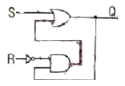
- S는 L, R은 H일 때 Q는 L로 된다.
- S는 H, R은 L일 때 Q는 H로 된다.
- S는 L, R은 L일 때 Q는 L로 된다.
- S는 H, R은 H일 때 Q는 L로 된다.
(정답률: 50%)
73. 그림과 같이 저항 R을 전류계와 내부저항 20[Ω]인 전압계로 측정하니 15[A]와 30[V]이었다. 저항 R은 몇 [Ω]인가?
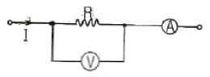
- 1.54
- 1.86
- 2.22
- 2.78
(정답률: 49%)
74. 그림과 같은 계전기 접점회로의 논리식은?
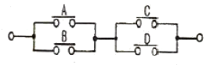
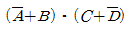
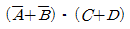
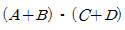
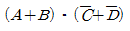
(정답률: 80%)
75. 그림과 같은 신호 흐름 선도에서
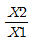
를 구하면?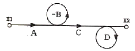
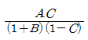
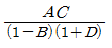
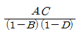
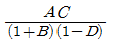
(정답률: 69%)
76. 다음 기동 토크가 가장 큰 단상 유도전동기는?
- 분상기동형
- 반발기동형
- 반발유동형
- 콘덴서기동형
(정답률: 65%)
77. 플레밍(Fleming)의 오른손 법칙에 따라 기전력이 발생하는 원리를 이용한 기기는?
- 교류 발전기
- 교류 전동기
- 교류 정류기
- 교류 용접기
(정답률: 76%)
78. PLC제어의 특징이 아닌 것은?
- 제어시스템의 확장이 용이하다.
- 유지보수가 용이하다.
- 소형화사 가능하다.
- 부품간의 배선에 의해 로직이 결정된다.
(정답률: 78%)
79. 어떤 도체의 단면을 1시간에 7200[C]의 전기량이 이동했다고 하면 전류는 몇 [A]인가?
- 1
- 2
- 3
- 4
(정답률: 76%)
80. 물체의 위치, 방위, 자세 등의 기계적 변위를 제어량으로 해서 목표값의 임의의 변하에 추종하도록 구성된 제어계는?
- 공정 제어
- 정치 제어
- 프로그램 제어
- 추종 제어
(정답률: 70%)